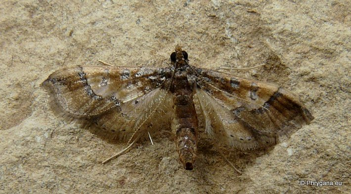
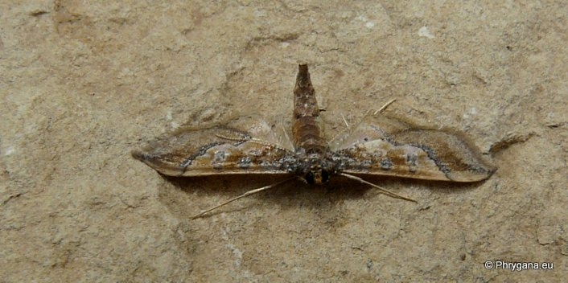
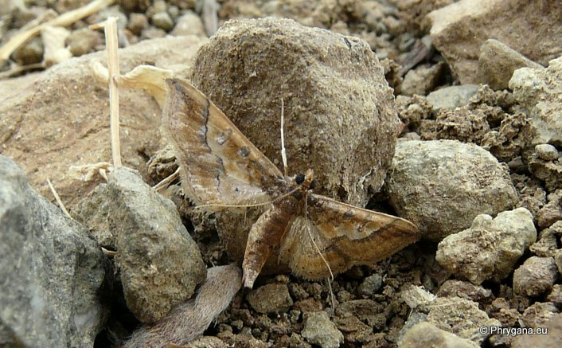

| PHRYGANA | Fauna | Flora | Galles | liste des espèces |
contact -
info - commentaires phrygana1 (at) gmail.com |
| Particularités crétoises | nouveautés | Mines | ressources naturelles |
| Hydriris ornatalis (Duponchel 1832) |
| 461 | Fauna | CRAMBIDAE | Glaphyriinae | Hydriris Meyrick 1885 |
|
 Hydriris ornatalis Melambes (Agios Giorgos) 13 juin 2013 |
| (en) Ornate Hydriris Moth |
| Envergure: 15-17 mm |
| Adulte: couleur brun grisâtre dans la zone basale; brun jaunâtre dans la zone médiane, l'orbiculaure et la réniforme avec des reflets métalliques; ligne postmédiane brun noirâtre, sinueuse; aile postérieure de couleurs similaires |
| Chenille poilue (à poils épars)brun verdâtre, avec une ligne latérale de points noirs; ligne dorsale noire |
| La chenille est oligophage: Convolvulacées (surtout du genre Ipomea) |
| Période de vol: mars avril |
| Statut en Crète: indigène |
| Biotopes en Crète: olivaies, jardins. |
| Distribution: Europe méridionale, Asie du Sud, Australie, AMrériques, Afrique |
| Note: vient à la lumière |
|
 Hydriris ornatalis Melambes (Agios Giorgos) 13 juin 2013 |
|
 Hydriris ornatalis Melambes (Agios Giorgos) 13 juin 2013 |
| 20 juin 2013 |
| © paul fontaine -- © Phrygana.eu 2007 -- 2013 |